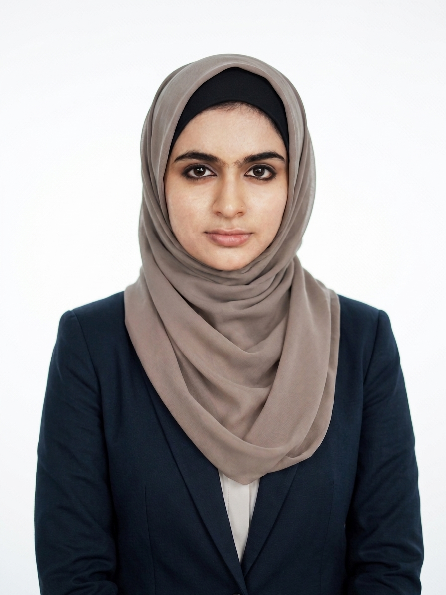
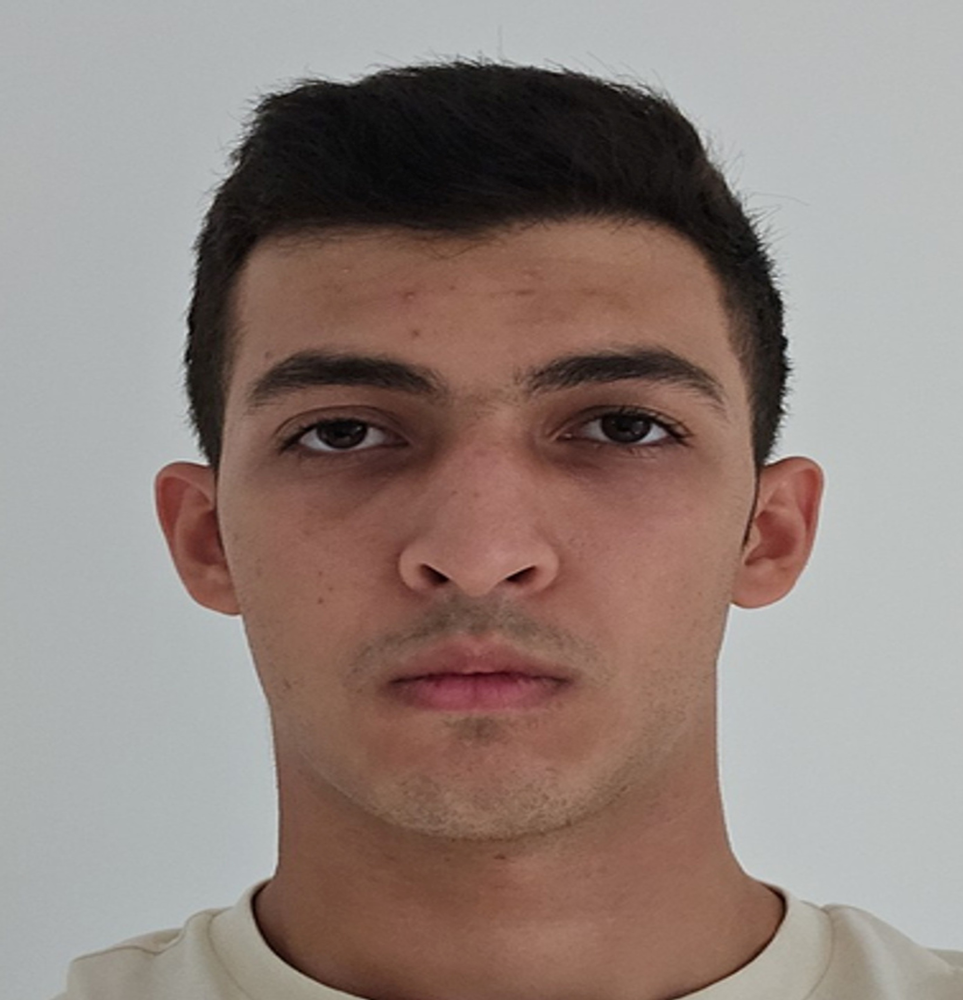
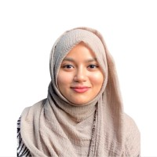
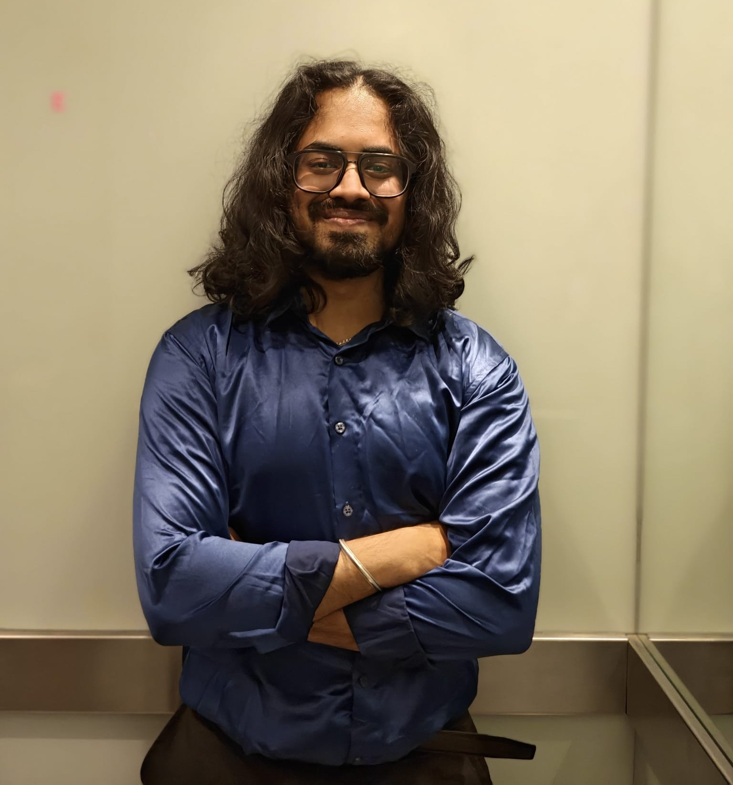
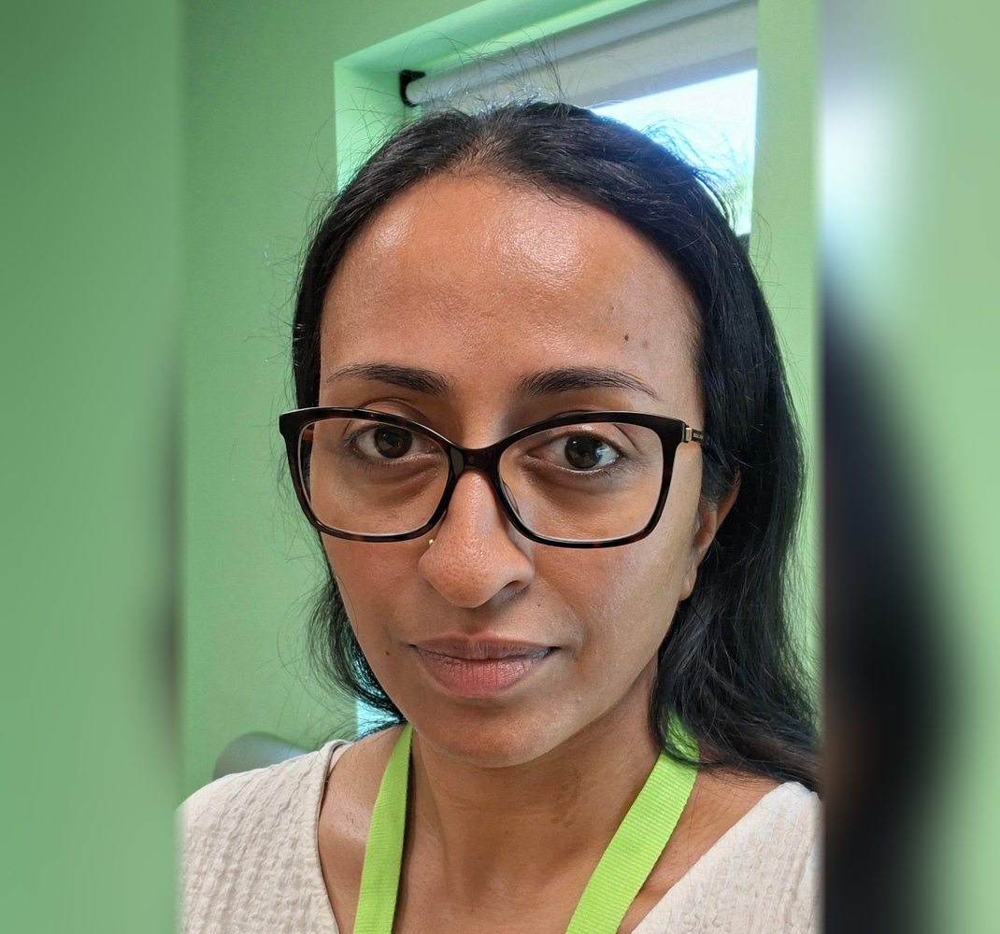
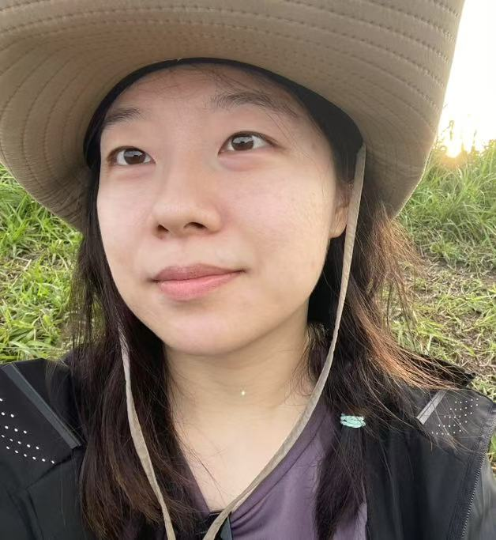
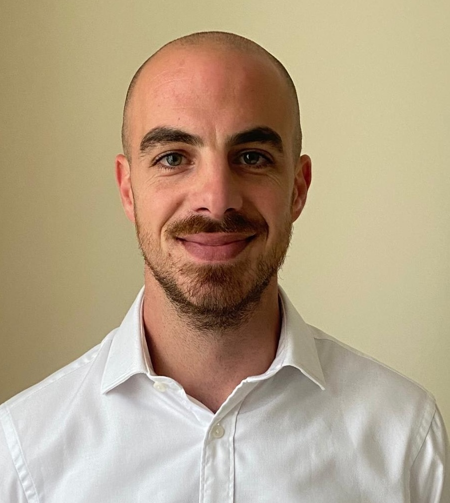
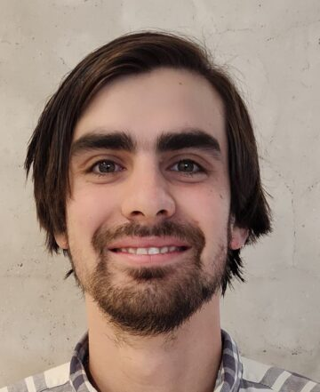

Postgraduates

Amina's PhD research focuses on using remote sensing and deep learning to automatically detect and monitor pit lakes across Australia. The project develops scalable approaches to map pit lake extent and dynamics over time, and integrates these observations with predictive hydrological models to better understand water-related processes and water quality. The research aims to support more informed mine closure, rehabilitation, and environmental management decisions.

Arastun is a PhD student in Computer Science at the University of Exeter, UK. His research investigates the theoretical and algorithmic foundations of LLM-based agent systems, with the goal of making such systems more collaborative, reliable, and efficient. This interest carries into his work with the UCL NLP group on agent search, composition, and design, exploring how agents can be discovered and orchestrated at scale.
Xiang is a PhD student in Computer Science at the University of Exeter, UK. His research focuses on developing machine learning models for solar power forecasting, exploring advanced time series and deep learning techniques to improve the reliability and accuracy of predictions. The results aim to enable more efficient and stable operation of renewable-powered data centres.

Frank is a PhD student in Computer Science at the University of Exeter, UK. His research focuses on designing novel graph neural network models that can capture complex spatio-temporal dependencies to enable robust early warning systems in domains such as seismic monitoring, water infrastructure, and environmental risk prediction. By integrating uncertainty quantification and adaptive learning, the research aims to advance both the theoretical foundations of graph neural networks and their practical deployment in real-world critical systems.
Two postgraduate Data Scientists worked on the development of a probabilistic simulation environment of vulnerability parameters for training reinforcement-learning-based impact-based decision-making agents for natural hazards. The project explicitly integrated physical susceptibility, socioeconomic vulnerability, community preparedness, and recovery capacity, using Bayesian hierarchical modelling to address uncertainties and enhance decision-making realism. This approach aimed to produce a robust and evidence-based framework that improves proactive risk management and emergency response capabilities.

Radia worked as a KTP Associate with Teesside University & CSX Carbon on AI-based peatland condition monitoring and assessment. Her research focused on developing machine learning models to identify, measure and predict peatland conditions, helping locate degraded areas requiring restoration. The project aimed to support cost-effective restoration decisions, protect peatland carbon stores and improve water quality and biodiversity.
Zainab worked as a KTP Associate with Teesside University & Nicander Ltd on intelligent digital twins for transport infrastructure management. Her research focused on applying data science and AI to intelligent transport systems. The partnership connected academic research with transport software development, alongside Nicander's work on asset and fault management and bus-priority solutions.

Lauren completed her PhD in Civil, Environmental, and Geomatic Engineering at University College London (UCL), UK. Her research focused on enhancing the resilience and sustainability of critical infrastructure systems through systems-based, data-driven methods. She developed intelligent, data-driven solutions for each phase of leakage management—anticipation, detection, and restoration—envisioning a self-healing system. These solutions were trained and tested on a dataset of over 2,000 district-metered areas managed by a UK water company. This approach provides a rapid and cost-effective method for identifying potential leaks, offering benefits such as increased infrastructure resilience, optimized repair strategies, and improved consumer confidence, which together promote sustainable demand-side behaviours.
Graduates









Visitors
